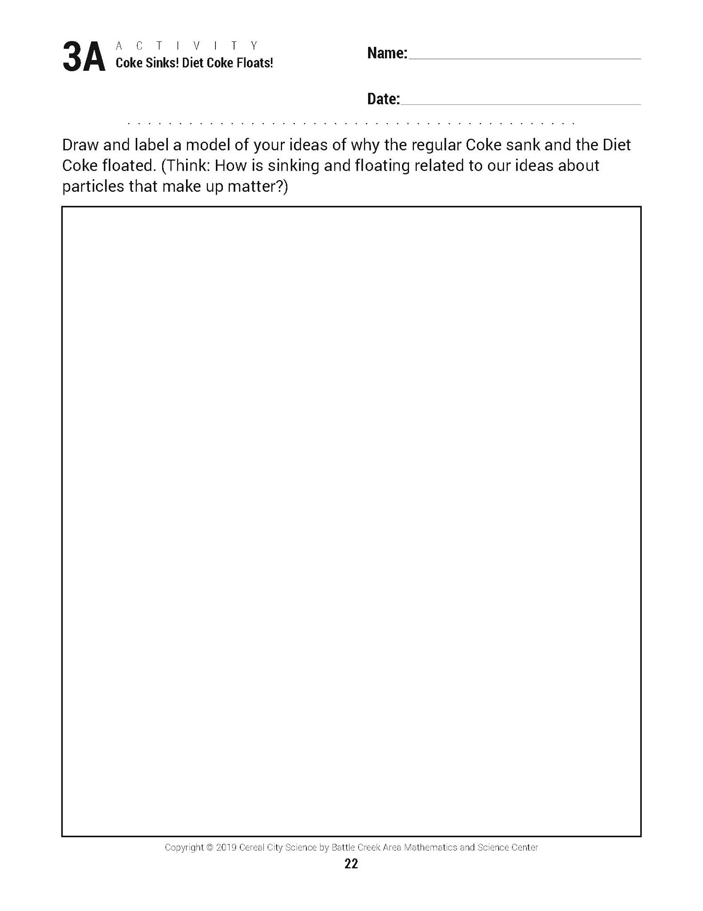
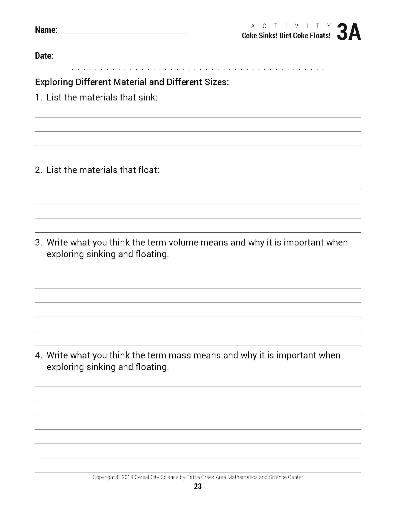
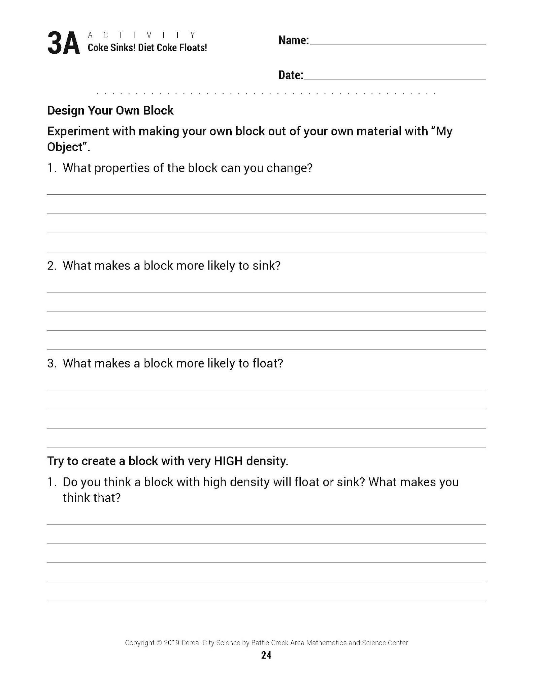
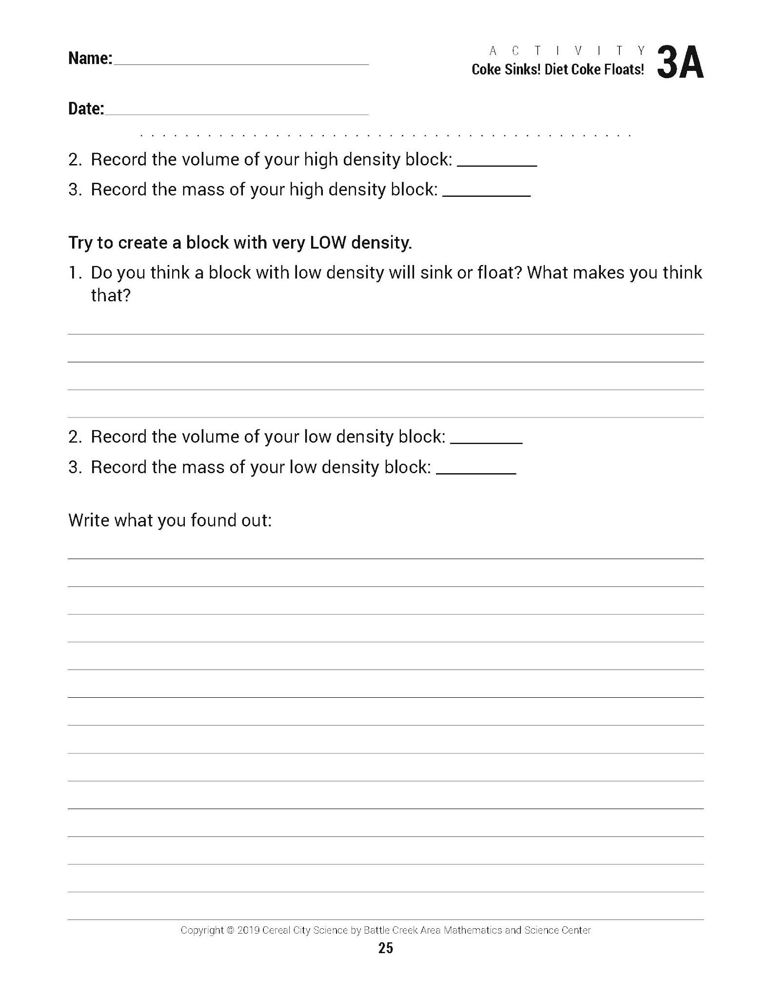
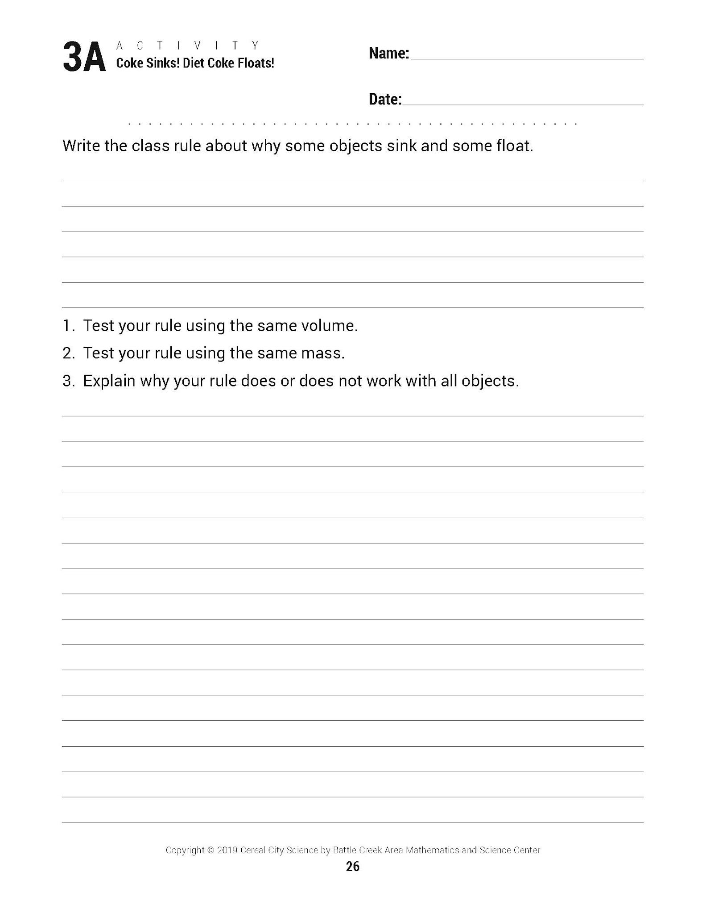

Activity 3A • Coke Sinks! Diet Coke Floats!Journal page 22 of 84
Name: ______________________________Date: _______________
Draw and label a model of your ideas of why the regular Coke sank and the Diet Coke floated. (Think: How is sinking and floating related to our ideas about particles that make up matter?)
Compare with original journal page 22
This is the unmarked scanned page for checking original diagrams, exact wording, or layout. The editable HTML content is above.

Activity 3A • Coke Sinks! Diet Coke Floats!Journal page 23 of 84
Name: ______________________________Date: _______________
Exploring Different Material and Different Sizes: ]. List the materials that sink:
2. List the materials that float:
3. Write what you think the term volume means and why it is important when exploring sinking and floating.
4. Write what you think the term mass means and why it is important when exploring sinking and floating.
Compare with original journal page 23
This is the unmarked scanned page for checking original diagrams, exact wording, or layout. The editable HTML content is above.

Activity 3A • Coke Sinks! Diet Coke Floats!Journal page 24 of 84
Name: ______________________________Date: _______________
Design Your Own Block Experiment with making your own block out of your own material with “My Object”.
1. What properties of the block can you change?
2. What makes a block more likely to sink?
3. What makes a block more likely to float?
Try to create a block with very HIGH density.
1. Do you think a block with high density will float or sink? What makes you think that?
Compare with original journal page 24
This is the unmarked scanned page for checking original diagrams, exact wording, or layout. The editable HTML content is above.

Activity 3A • Coke Sinks! Diet Coke Floats!Journal page 25 of 84
Name: ______________________________Date: _______________
2. Record the volume of your high density block:
3. Record the mass of your high density block:
Try to create a block with very LOW density.
1. Do you think a block with low density will sink or float? What makes you think that?
2. Record the volume of your low density block:
3. Record the mass of your low density block:
Write what you found out:
Compare with original journal page 25
This is the unmarked scanned page for checking original diagrams, exact wording, or layout. The editable HTML content is above.

Activity 3A • Coke Sinks! Diet Coke Floats!Journal page 26 of 84
Name: ______________________________Date: _______________
Write the class rule about why some objects sink and some float.
1. Test your rule using the same volume.
2. Test your rule using the same mass.
3. Explain why your rule does or does not work with all objects.
Compare with original journal page 26
This is the unmarked scanned page for checking original diagrams, exact wording, or layout. The editable HTML content is above.
